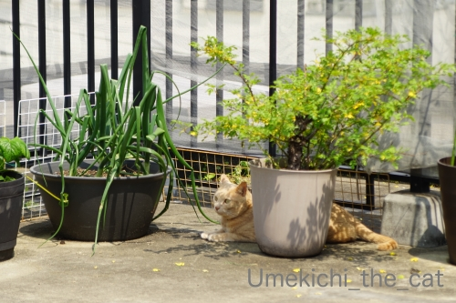
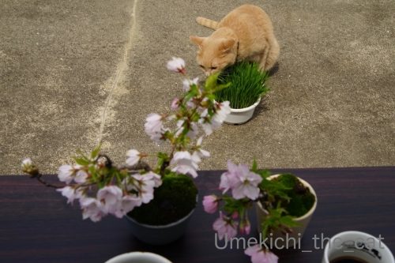
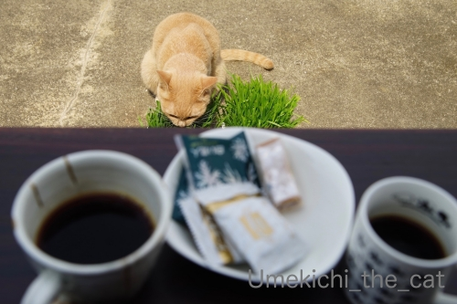
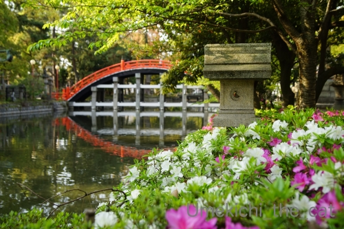
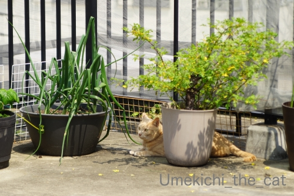
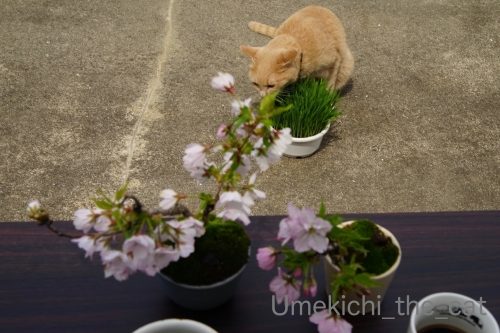
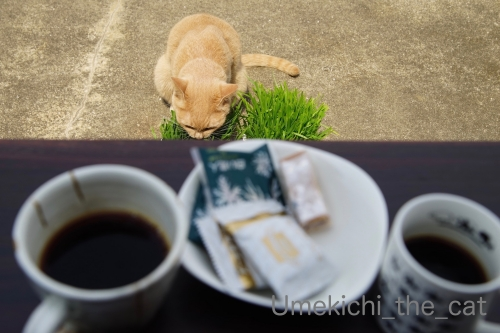
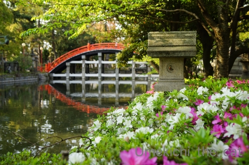

梅吉がいざなう、21秒ベランダの旅 [梅吉]
良い子でお家で過ごしていらっしゃるみなさんに朗報！！
『梅吉さんと行く！21秒ベランダの旅』に参加してみませんか？
出発場所はご自宅のPC前。そしてなんと！参加費は無料です( ´艸｀)
それでは、出発でーす＾＾
（早回しにしたのでわちゃわちゃ動きますよw）
みなさん無事に到着されたでしょうか＾＾
では、現地でのアクティビティーをご紹介します。

バラの葉陰でまったりするもよし

いらんところに頭を突っ込んで冒険するもよし。
もちろん梅吉と一緒にコンクリートの上でくりんくるんしていただくことも可能です。
（お体に合わせた無理のない範囲でお願い致します）
多数のご参加をお待ちしておりまーす(≧▽≦)
＊＊＊＊＊＊＊＊＊＊＊＊＊＊＊＊＊＊＊＊＊＊＊＊＊＊＊＊＊＊＊＊＊＊＊＊＊＊
外出自粛になってから我が家が買ったもの。

ベランダでお茶が飲める様に簡単に開けるテーブル。
アウトドア用の大きなテーブルもあるのですが出し入れが面倒でw
これだとさっと出せてすぐに広げられます。

下僕がコーヒーを飲んでいる間梅吉さんは猫草タイム。

また別の日。
おやつが多すぎるんじゃ？というご意見は聞こえませんwwwww
１日家から出ず梅吉を囲んでのんびり過ごしていると
世の中のニュースが遠い世界の出来事の様に感じることも。
そのせいか外に出てざわざわした雰囲気を感じるとどっと疲れます。
この状態まだまだ続きそうですよね。
うまくバランスをとって乗り切らなければ。

本殿は閉門しているけれど周辺は今まで通り。
家の外で一息つける唯一の場所です。
 ↑ガブッと一押し↑
↑ガブッと一押し↑
『梅吉さんと行く！21秒ベランダの旅』に参加してみませんか？
出発場所はご自宅のPC前。そしてなんと！参加費は無料です( ´艸｀)
それでは、出発でーす＾＾
（早回しにしたのでわちゃわちゃ動きますよw）
みなさん無事に到着されたでしょうか＾＾
では、現地でのアクティビティーをご紹介します。

バラの葉陰でまったりするもよし
いらんところに頭を突っ込んで冒険するもよし。
もちろん梅吉と一緒にコンクリートの上でくりんくるんしていただくことも可能です。
（お体に合わせた無理のない範囲でお願い致します）
多数のご参加をお待ちしておりまーす(≧▽≦)
＊＊＊＊＊＊＊＊＊＊＊＊＊＊＊＊＊＊＊＊＊＊＊＊＊＊＊＊＊＊＊＊＊＊＊＊＊＊
外出自粛になってから我が家が買ったもの。
ベランダでお茶が飲める様に簡単に開けるテーブル。
アウトドア用の大きなテーブルもあるのですが出し入れが面倒でw
これだとさっと出せてすぐに広げられます。

下僕がコーヒーを飲んでいる間梅吉さんは猫草タイム。

また別の日。
おやつが多すぎるんじゃ？というご意見は聞こえませんwwwww
１日家から出ず梅吉を囲んでのんびり過ごしていると
世の中のニュースが遠い世界の出来事の様に感じることも。
そのせいか外に出てざわざわした雰囲気を感じるとどっと疲れます。
この状態まだまだ続きそうですよね。
うまくバランスをとって乗り切らなければ。

本殿は閉門しているけれど周辺は今まで通り。
家の外で一息つける唯一の場所です。

カフェオレ色の梅吉

梅吉 2023年8月10日 永眠


梅吉と出会った譲渡会

犬猫の理由なき殺処分ゼロ
妄想広告
UMEKICHI 光

爆発的に早い！
時々攻撃的！
Thanks to Mr.Boss365
爆発的に早い！
時々攻撃的！
Thanks to Mr.Boss365

は～い、無事に到着できましたよ～
ベランダでのびのび過ごす梅吉君を眺めながらお茶を楽しむ
素敵なすごしかたですね
我が家のおてんば娘は怖くてベランダには出せませんので
羨ましいです（＾＾）
by 藤並 香衣 (2020-04-20 00:10)
あ~~。ベランダ広くていいな~。
今の季節はお外でカフェ気持ちいいですよね。しかも梅吉さんといっしょ。いいなっ。
by zombiekong (2020-04-20 00:45)
梅吉さん尻尾ぶんぶんでご機嫌さんですね♪
コンクリートの上で同じようにグリングリンしたい(背中が痒いわけではない)
そして猫草タイムもぜひ体験してみたいものです。
今は電車に乗るのもちょっとアレなのでご近所散歩がいいですね(^^♪
by yamatonosuke (2020-04-20 01:50)
おやつはその時の気分で選ぶので
いろんな種類を並べるのが良いと思います。
全部食べ切るわけじゃないですよね？＾＾
by ぽちの輔 (2020-04-20 06:09)
わあ、着いていきますよー
広いベランダ、コーヒータイムいいですね～
チョコマロン、おいしそう～と思わずググっちゃいました！
by liang (2020-04-20 06:58)
気持ち良さそうにクルンクルン♪
梅吉さんを見ながらのティータイム！
優雅です(#^.^#)
by きぃ (2020-04-20 08:57)
梅吉さん、しっぽブンブン♪ ご機嫌さんですね～。
おやつタイムで、おっとさん＆ちぃさんもご機嫌かな。
そういえば、うちもルーフバルコニーに、テーブル＆椅子があります。
出しっぱなしだと汚れるので、小型物置？みたいのを置いてしまってますが、さすがにそれでも傷んでるだろうなぁ。もう長いこと使ってない‥‥。
ルーフバルコニーは北側で、景色がイマイチな上に、近所のショッピングセンターから見える角度(駐車場ぐらいだけど)なので、なんとなく落ち着かない。家から花火が見えた頃は、ベランダの方に出したこともあったけど。
by ChatBleu (2020-04-20 09:01)
21秒ベランダの旅、堪能しました。
ベランダでティータイムもいいね。
by 英ちゃん (2020-04-20 09:31)
21秒ベランダの旅、早速参加させていただきましたよ(^^
梅吉さん専用の近道ルートがあるのですね♪
ベランダで珈琲&おやつタイム羨ましい。ばっちり「白い恋人」あるｗ
うちの狭小ベランダでは立ち飲みしかできないぞｗ
昨日タルちゃんと数分間のベランダ日向ぼっこしましたが・・・
車の音でそそくさとお部屋へリターンでした。
by marimo (2020-04-20 09:34)
こんにちは。
諸事情あり、押逃げします。スミマセン！？(=^･ｪ･^=)
by Boss365 (2020-04-20 09:38)
梅吉さんの舞いも堪能させていただいて無事に到着しました♪( ´▽｀)
ルーフバルコニー、良いですねぇ( ^ω^ )
うちは灰色の手なので植物は育てられませんが
お猫様と一緒に外で春を楽しみながらのコーヒーブレイクが
とっても羨ましいです=(^.^)=
by ニッキー (2020-04-20 10:42)
外出自粛でベランダとかで色々楽しめていますね！
梅吉さんもベランダで日差しを楽しんでいますね。
by ma2ma2 (2020-04-20 10:50)
梅吉さんの弾丸スタートで始まる21秒の旅！
ベランダがほんと広々していて良いですね～♪
優雅なティータイム、街中でこの広さはほんと貴重だと思います(#^^#)
ウチの極小ベランダでは、洗濯ものと共存しながらでは立ち飲みも厳しい感じです(≧▽≦)
確かに家から出ず、ごはん作って、コーヒー淹れて、猫と遊んですごしていると、ふとコロナ騒ぎが遠い世界のように感じますね。
で、ニュースを見てまた厳しい現実に引き戻される・・・。
先週木曜を最後にスーパー行ってなくてさすがに冷蔵庫がすっからかん。
今日のランチは冷凍パスタをチン！で済まそう^^;
住吉っさんの新緑と太鼓橋、心が落ち着きます！！
by ゆきち (2020-04-20 11:26)
ベランダ、広いですね。これなら日向ぼっこも楽しそう♪
うちのベランダは狭くて、外も見えないし、、うーん。
前記事の体操中のビシバシ、可愛い〜♡そして痛そう〜☆
by nachic (2020-04-20 13:08)
ベランダの旅、参加させていただきました！
梅吉くん案内してくれてありがとう^^
わちゃわちゃなお姿、微笑ましく眺めさせていただきましたわ♪♪
ベランダのテーブルいいね！
うちも花粉症の季節が過ぎたら、ベランダでのんびりしたいよぉｗｗ
今は無理いぃぃぃ(笑)
北国のお菓子、美味しそうｗ
by リュカ (2020-04-20 13:45)
こんにちは！
わちゃわちゃ動き回る姿を見ているだけで
目が回りますね （"＾ω＾）・・・
by Take-Zee (2020-04-20 14:26)
梅吉くん、飛び出していきますね！
日向でくりんくるん、参加したいわぁ^^
花と緑と風を楽しみながら、梅吉さんと差し向かいでティータイム、最高です～^^
by sana (2020-04-20 14:34)
梅吉さんもご家族も広いベランを堪能してますね(^_^)
ぐるんぐるんの探検物語、楽しませていただきました！
by kou (2020-04-20 16:27)
白い恋人だ〜(^^)
食べたくなりました〜。
のんびりコーヒー、そんな時間も作ろうかなぁ…。
by も〜 (2020-04-20 17:23)
在宅続きの私にはとてもありがたい無料コースでした。
ありがとうございます。^^
by 小松達也 (2020-04-20 18:16)
こんにちは。
コメントありがとうございます。
家族みんなで踏ん張ります！？(=^･ｪ･^=)
by Boss365 (2020-04-20 18:32)
メッチャ広いベランダですねぇ
良いな良いな かわい子ちゃんと
ベランダであんなことやこんなことしたいなぁ
ロト買いに行こう
by (。・_・。)２ｋ (2020-04-20 22:00)
しっぽブンブン、そしてゴロンゴロン！
とても気持ち良さそう。^^)
梅吉さんの視線で見たら、ベランダはどんな風に見えてるんだろう。^^;
おうちでティータイム、いいアイデアですね！！
by yes_hama (2020-04-20 22:10)
梅吉さんぽゴロンゴロン楽しいね^^
by ニコニコファイト (2020-04-21 07:13)
ベランダの旅！満喫いたしました！
べランダでまったりティータイム、いいですね～。
テレビの報道番組は、気分が落ち込むので、もう最近見てません(^_^;)
by よーちゃん (2020-04-21 12:32)
のびのびできる広いベランダいいですね～。
梅吉さんも気持ちよさそうです。
私も、GWはすこしでも外の雰囲気を味わえる
ベランダくつろぎタイムを楽しもう！
by ふにゃいの (2020-04-21 20:13)
室外機の上から近道しちゃうところが、なんとも猫的で愛らしく♪
あとをついて、私も身軽に上にのった気分を堪能でした＾＾。
猫草と珈琲で、皆でまったり、いい春の日ですね。
もうつづじが咲いてる・・・早いなぁ、季節の移ろい。
リレーのようにどんどん花が咲いていきますね。
by Inatimy (2020-04-21 21:55)
ベランダ広っ！！これだけ広いベランダなら植木鉢がいっぱい
置いてあっても邪魔になりませんね。そして、外出自粛になって
も動物がいれば全く退屈なんかしない、どころかむしろ普段より
もいっぱい一緒にいられるから幸せって思うわー。まぁ、犬の
場合は散歩に行くので「外出禁止」になったらどうしようと不安
ですが。
by mio (2020-04-21 22:06)
以前から思っていましたが、広いベランダですよね！
これなら梅ちゃんも遊べて大喜びでしょうね。
そしてお外でのティータイムも気持ち良さそうです♪
梅ちゃんも一緒に猫草タイム❤︎❤︎
お茶請けに白い恋人が入っているのを見逃さなかった私w
これ、大好きなお菓子です(￣∀￣*)ｲﾋｯ
by カトリーヌ (2020-04-26 22:39)